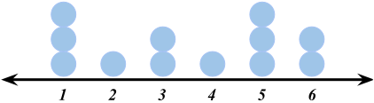
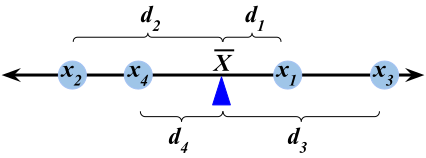

PSTAT 5A: Lecture 02
Descriptive Statistics, Part II
Ethan P. Marzban
4/3/23
Data, Revisited
A More Rigorous Model of Data
Last lecture we discussed the data matrix representation of a dataset.
- To recap, the data matrix is a tabular representation of our data where the rows are called observational units and the columns are called variables.
But, I’d like to stress- the data matrix is just a way to represent data. The actual data itself are the elements of the data matrix.
In this way, we can think of data as a collection of objects (which could be numbers, categories, etc.)
- In other words, we can mathematically view data as a list or sequence.
A More Rigorous Model of Data
This helps us establish some notation when it comes to dealing with data.
Specifically, we can use set notation to represent an abstract piece of data: \(X = \{x_i\}_{i=1}^{n}\).
If you’re not familiar with this notation, it is a shorthand for \(\{x_1, \cdots, x_n\}\); i.e. a collection of \(n\) objects, called \(x_1\), \(x_2\), all the way up to \(x_n\).
Again, the elements \(x_i\) could be numbers, categories, colors, etc. The key point is that using the notation \(x_i\) is just a placeholder for an abstract observation.
Notation
We can further borrow the notation of set theory to talk about data aggregation: given a set of data \(X = \{x_i\}_{i=1}^{n}\) and another set of data \(Y = \{y_i\}_{i=1}^{m}\), we can denote the aggregated set \(Z\), consisting of the elements \(x_1, \cdots, x_n, y_1, \cdots, y_m\), by \[ Z = X \cup Y \]
For example, \(\{1, 2, 3\} \cup \{4, 5\} = \{1, 2, 3, 4, 5\}\).
Mathematically, we call this the union of two sets.
I will be using this notation going forward, so I encourage you to familiarize yourself with it!
Also, for today’s lecture, I will be assuming the elements \(x_i\) are numbers- I will be very clear whenever I relax this assumption.
Summarizing Data
This lecture we will primarily devote our attention to summarizing our data as best we can.
This will lead us to several different summary statistics, which are really just mathematical quantities that seek to describe different aspects of our data.
Measures of Central Tendency
Quantifying “Center”
Here is a very broad question: what is the center of a dataset \(X = \{x_i\}_{i=1}^{n}\)?
It may help to plot our datapoints on a number line:

Now, I’ve assigned specific numbers to each point in this dataset. I’d like to stress that this is just for illustrative purposes- one of the tools we will need to learn for this class is the practice of abstraction.
- Said differently, there is nothing special about the numbers I’ve put on the figure above- just focus on the points!
Quantifying “Center”
- Back to our question: what is the center of this dataset?
I think many of us would say that the center is somewhere between 2 and 3.
Here is a slightly more concrete way of thinking about the center of this dataset- where should I place a fulcrum to ensure the above number line remains balanced?
- We call this balancing point the arithmetic mean (or just mean, or average, for short), and denote it \(\overline{X}\).
The Mean
Formula: The Mean
Given a set of data \(X = \{x_i\}_{i=1}^{n}\), we compute its mean, denoted \(\overline{X}\), using the formula \[ \overline{X} = \frac{1}{n} (x_1 + \cdots + x_n) \] which can be equivalently written as \[ \overline{X} = \frac{1}{n} \sum_{i=1}^{n} x_i \]
- In words: we compute the mean by adding up all of the points included in our dataset, and dividing by the total number of points.
A Note on Notation
Perhaps you haven’t seen the notation \(\sum_{i=1}^{n} x_i\) before. Don’t get scared by it! It’s just a shorthand notation for the sum of the points \(\{x_1, x_2, \cdots, x_n\}\).
So, if it’s easier for you, you can always think of \((x_1 + \cdots, x_n)\) in place of \(\sum_{i=1}^{n} x_i\).
Having said that, I will often use this notation (called sigma notation, as the symbol \(\sum\) is the capital Greek letter “sigma”) as it saves quite a bit of time in the long run.
- I also urge you to familiarze yourself with \(\sigma\) notation, as I’m sure you will encounter it even beyond this course!
Time for an Exercise!
Exercise 1
Compute the mean of the set \(S = \{-1, 0, 1, 1, 2, 4\}\). Discuss with your neighbors!
Transforming Data
Leadup
Suppose \(F = \{f_i\}_{i=1}^{n}\) denotes a set of temperature measurements, as recorded in Fahrenheit.
Now, let’s say I want to convert the measurements to be in terms of Centigrade, and will store the resulting values in a set called \(C = \{c_i\}_{i=1}^{n}\) (for “Centigrade”).
The \(c_i\) values aren’t new data- they are still linked with our original \(f_i\) Fahrenheit measurements! Specifically, they are linked by way of the following formula: \[ c_i = \frac{5}{9} (f_i - 32) \] (as this is the conversion from Fahrenheit to Centigrade).
Transformations
This is a specific example of a more general concept known as data transformation.
In general, given a set of data \(X = \{x_i\}_{i=1}^{n}\), we can consider the set of points obtained by applying some function (a.k.a. a transformation) \(g\) to the points \(x_i\), to obtain a new set \(\{g(x_i)\}_{i=1}^{n}\)
For instance, we used \(g(x) = (5/9) \cdot (x - 32)\) in our Fahrenheit-to-Centigrade example on the previous slide.
There are many other functions we could consider! For instance, in certain cases we may need to transform our data using a logarithm function; i.e. \(g(x) = \ln(x)\).
Linear Transformations
For now, let’s restrict ourselves to considering linear transformations of our data.
Recall that a function \(g(x)\) is said to be linear if it is of the form \(g(x) = ax + b\).
- So, we are restricting ourselves to functions \(g\) of this form.
One question we may ask is: what is the mean of our transformed data?
- In other words, given a set \(X = \{x_i\}_{i=1}^{n}\) and a new set \(Y := \{ax_i + b\}_{i=1}^{n}\) for fixed constants \(a\) and \(b\), what can we say about \(\overline{Y}\)?
- Well, let’s use the definition of the mean!
Definitionally, \(\overline{Y} = \frac{1}{n} \sum_{i=1}^{n} y_i\).
But, we know that \(y_i = a x_i + b\); i.e. \[\begin{align*} \overline{Y} & = \frac{1}{n} \sum_{i=1}^{n} (a x_i + b) \\ & = \frac{1}{n} \left[ (ax_1 + b) + (ax_2 + b) + \cdots + (ax_n + b) \right] \end{align*}\]
- Grouping like terms yields:
\[\begin{align*} \overline{Y} & = \frac{1}{n} \left[ (ax_1 + b) + (ax_2 + b) + \cdots + (ax_n + b) \right] \\ & = \frac{1}{n} \left[ (ax_1 + ax_2 + \cdots + ax_n) + (\underbrace{b + \cdots + b}_{\text{$n$ times}}) \right] \\ & = \frac{1}{n} \left[ a (x_1 + \cdots + x_n) + n \cdot b \right] \\ & = a \cdot \left[ \frac{1}{n} (x_1 + \cdots + x_n) \right] + \frac{1}{n} (n \cdot b) = \boxed{a \overline{X} + b} \end{align*}\]
- So, if I take a set of data, multiply every element by some fixed constant \(a\), and then add some other fixed constant \(b\) to all of the data points, the mean of the resulting points will be equal to \(a\) times the mean of the original data points plus \(b\).
Exercise 2
Suppose \(12\) measurements of the temperature in Gauchoville have an average of 68oF. What is the corresponding average temperature in oC? Discuss with your neighbors!
More Complicated Transformations
For more general transformations \(g\), things don’t work out as nicely.
For instance, if we take the logarithm of each datapoint, the average of these new points is not necessarily going to be the logarithm of the average.
- To see that, we can consider a specific example: Let \(X = \{1, 2, 3\}\) and take \(Y = \{\ln(1), \ \ln(2), \ \ln(3)\}\). Then \(\overline{X} = 2\) and \(\overline{Y} \approx 0.597\), whereas \(\ln(\overline{X}) = \ln(2) \approx 0.693\).
Warning
If \(X = \{x_i\}_{i=1}^{n}\) and \(Y = \{g(x_i)\}_{i=1}^{n}\) where \(g\) is not a linear transformation, then it is not the case that \(\overline{Y} = g(\overline{X})\).
Back to Central Tendency
Central Tendency
We have seen that the mean can be viewed as a sort of balancing point of our data.
In some ways, this means that it is a measure of the center of our data.
In general, we use the term measure central tendency to refer to any summarizing quantity that indicates where the “center” of our data is.
- So, one measure of central tendency is the mean.
Leadup
Here’s another idea: suppose we line up our data in ascending order.
Then suppose we cross off the first and last points.
Then, we cross off the first and last points that are not yet crossed off.
And suppose we keep repeating this.
What we will be left with is, in some ways, the “middle” of our data- i.e. the center.
This measure of central tendency is called the median.
- More concretely:
The Median
Formula: The Median
To compute the median of a set \(X = \{x_i\}_{i=1}^{n}\) of numbers, we do the following:
- Line up the numbers in ascending order
- Cross off the first and last numbers
- Cross off the first and last numbers that haven’t been crossed off
- Continue this process until you are either left with a single number (in which case this number will be the median), or a pair of numbers (in which case you compute the average of these two numbers).
As an example, let’s compute the median of the set \(S = \{1, 2, 3, 3, 5, 6, 10\}\):
1, 2, 3, 3, 5, 6,101,2, 3, 3, 5,6,101,2,3, 3,5,6,10So, the median is \(\boxed{3}\).
If, instead, we wanted to compute the median of the set \(S = \{1, 2, 3, 3, 5, 6, 10, 11\}\) :
1, 2, 3, 3, 5, 6, 10,111,2, 3, 3, 5, 6,10,111,2,3, 3, 5,6,10,11So, the median is \((3 + 5)/2 = \boxed{4}\).
Measures of Spread
Range
Another way we can summarize a dataset \(X = \{x_i\}_{i=1}^{n}\) is to describe how spread out it is.
One idea on how we can capture the spread is to say: how far apart is the smallest value from the largest value?
Indeed, this statistic has a name: the range.
Formula: Range
Given a set of numbers \(X = \{x_1, x_2, \cdots, x_n\}\), we compute the range of \(X\) as: \[ \mathrm{range}(X) = \max\{x_1, \cdots, x_n\} - \min\{x_1, \ \cdots, \ x_n\} \] i.e. the largest value minus the smallest value.
Leadup
Now, there is another way to think about spread: suppose we look at the average distance of points from their mean.
More specifically: define \(d_i := x_i - \overline{X}\) to be the deviation of the \(i\)th point from the mean:

- The distance between \(x_i\) and \(\overline{X}\) is thus the squared deviance \(d_i^2\).
Therefore, the average distance of each point from the mean would be \[ \frac{1}{n} \sum_{i=1}^{n} d_i^2 = \frac{1}{n} \sum_{i=1}^{n} (x_i - \overline{X})^2 \]
For reasons that are slightly beyond the scope of this course, we will actually divide by \(n - 1\) as opposed to \(n\). (It turns out that this yields a measure that has some slightly nicer properties than the one containing \(1/n\) in place of \(1/(n - 1)\)): \[ \frac{1}{n - 1} \sum_{i=1}^{n} (x_i - \overline{X})^2 \]
The Variance
- This is what we call the variance of the set \(X\), denoted by \(S_X^2\).
Formula: Variance, and Standard Deviation
Given a set of data \(X = \{x_i\}_{i=1}^{n}\), we compute the variance of \(X\) by \[ S_X^2 = \frac{1}{n - 1} \sum_{i=1}^{n} (x_i - \overline{X})^2 \] We define the standard deviation, denoted by \(S_X\), to be \(\sqrt{S_X^2}\); i.e. \[ S_X := \sqrt{\frac{1}{n - 1} \sum_{i=1}^{n} (x_i - \overline{X})^2} \]